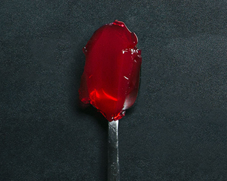
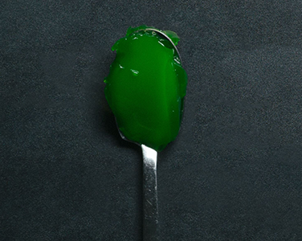
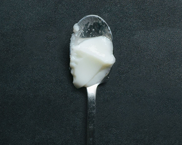

Taste The Colours

Red
Red foods remind us of berries and soft fruits, so we anticipate a sweet taste.

Green
Fresh, zingy green colours are reminiscent of unripe fruit, promising sour or acid flavours.

White
White foods evoke memories of salt and salty flavours, driving the expectation of a savoury treat.